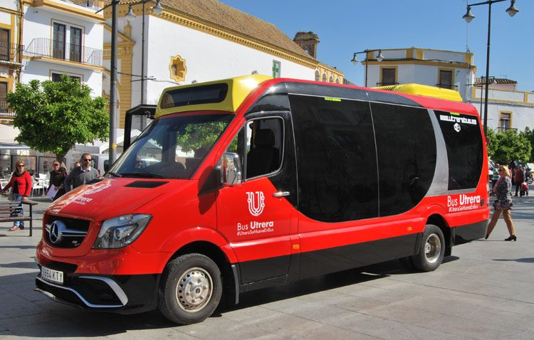
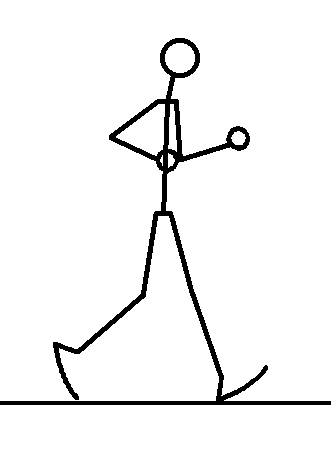
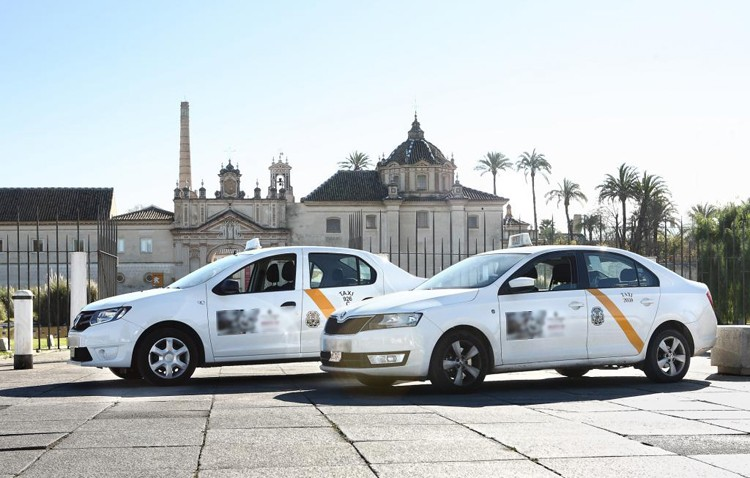

¿Como puedo moverme por Utrera?
Transporte Público
Fomentando a la no contaminación nuestra primera recomendación es que uses transporte público para moverte por Utrera ya que asi no contaminarás y te moverás rapido a los lugares que quieras ir. Puedes encontrar el horario de los autobuses aquí

Caminando
Considerando que Utrera no es tan grande, podrias acceder a varios sitios andando, no te podrías ir a un lugar a la otra punta de Utrera, pero si podrías ir a sitios que tengas cerca de donde estés hospedado.

En taxi
Opcion fácil y rápida si necesitas llegar a algún sitio rapido o no te apetezca coger el transporte público aunque vas a contaminar!

Mapa de Utrera